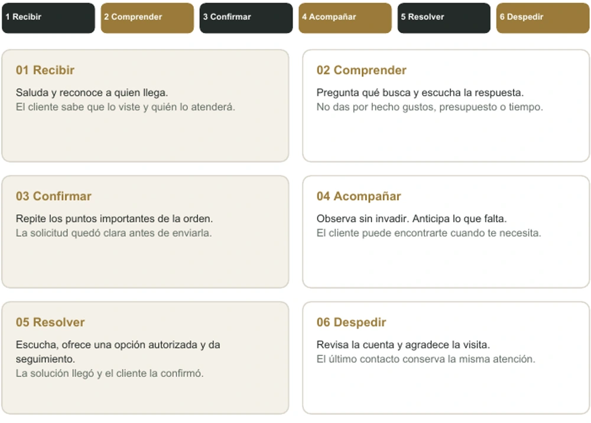
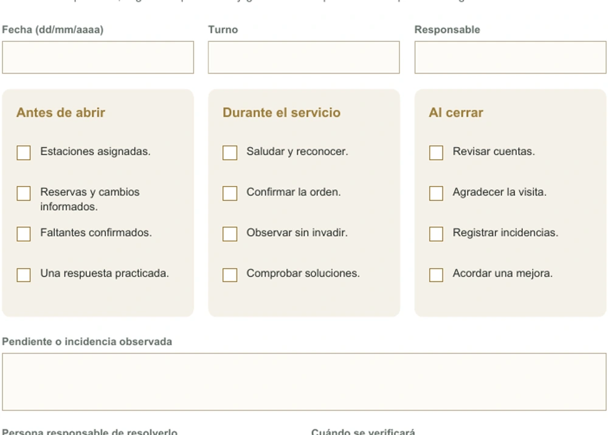

Ampliar vista real ↗
Ampliar vista real ↗Servicio · Equipo · Costos
Servicio y operación,
en un solo kit.
Tres PDF rellenables y un Excel de ocho hojas para trabajar servicio, equipo y números del restaurante.
Mejora el servicio, organiza al equipo y entiende los números de tu operación.
PDF con campos para completar y herramientas listas para aplicar.
5 recursos
Ampliar vista real ↗Servicio · Equipo · Costos
Tres PDF rellenables y un Excel de ocho hojas para trabajar servicio, equipo y números del restaurante.

Ampliar vista real ↗Servicio
Practica la secuencia del servicio. Escribe una mejora, pruébala y guarda el seguimiento.

Ampliar vista real ↗Servicio · Equipo
Marca preparación, servicio y cierre. Asigna responsables y anota lo que hay que mejorar.
 Ampliar vista real ↗
Ampliar vista real ↗Costos
Ventas, inventario, movimientos, costeo y equilibrio en una herramienta con tablero visual.
 Ampliar vista real ↗
Ampliar vista real ↗Equipo
Escribe acuerdos y responsables. Alinea al equipo antes del servicio y guarda lo que decidieron.
Tu selección se prepara por WhatsApp. RBI confirma impuestos, pago y entrega antes de comprar.
Ver mi pedido ↗Descarga los PDF y ábrelos en un visor compatible con formularios. Escribe en sus campos, marca las tareas y guarda una copia con otro nombre. También puedes imprimirlos.